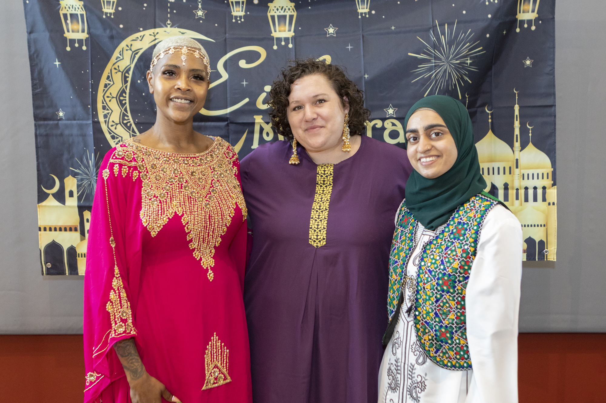

1 / 3

IQURA
2 / 3

Malikah event
3 / 3

Malikah event
3 / 3

eid event
3 / 3
Valentines day event
The Muslim Women's Leadership Development Project is an initiative at the Brooklyn College Women’s Center that seeks to provide representation for Muslim Women in different career fields, develop a mentorship network, & foster and maintain a community for Muslim students. The goal of our project is to develop meaningful events for Muslim women on the Brooklyn College Campus every semester and address their concerns from Islamaphobia to religious accommodations.
The Women's Center at Brooklyn College is a vibrant hub of support, advocacy, and empowerment for students of all genders. It provides a welcoming and inclusive space where individuals can access resources, engage in dialogue, and participate in various events and programs aimed at promoting gender equity and social justice.
Through its programming and initiatives, MWLDP prioritizes inclusivity, respect, and empowerment, ensuring that individuals can freely express themselves without fear of judgment or discrimination. By championing diversity and amplifying marginalized voices, MWLDP cultivates a sense of belonging and solidarity, making it a sanctuary for personal growth and community engagement.
essence of unity, highlighting the interconnectedness of all beings and the power of collective solidarity. It serves as a rallying cry for harmony, emphasizing the shared values, experiences, and aspirations that unite humanity regardless of differences.